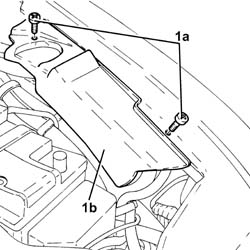
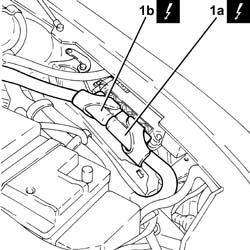
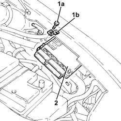

1056F82 Injection(ignition )system 'single/ CONTROL UNIT - R.R.
- Path
- Procedures > 10 ENGINE > 1056 PETROL INJECTION SYSTEM > 1056F DIRECT PETROL INJECTION SYSTEM > 1056F82 Injection(ignition )system 'single/ CONTROL UNIT - R.R.
- Kind
- repair procedure (removal / refitting; the operation number is the code)
- Applies to
- engines: 2.0 JTS, 2.0 JTS; all production periods
- Interactive page
- https://sloeber94.github.io/elrnDB-a156/en/#/3237744
Applies to: engines: 2.0 JTS, 2.0 JTS; all production periods
 Removing
Removing
 Refitting
RefittingEnsure that the ignition key is in the OFF position, then disconnect the negative battery terminal.
 | Name | Connector |
|---|---|---|
- | Battery |
1. Undo the nuts (1a) and remove the control unit protection (1b).

Applies to: engines: 2.0 JTS, 2.0 JTS; all production periods
1. Disconnect the electrical connections (1a) and (1b) from the injection/ignition system control unit.
| Name | Connector |
|---|---|---|
1a | Engine management ECU |
| Name | Connector |
|---|---|---|
1b | Engine management ECU |

Applies to: engines: 2.0 JTS, 2.0 JTS; all production periods
1. Undo the bolt (1a) and remove the bracket (1b) securing the fuel injection/ignition control unit.
2. Remove the fuel injection/ignition control unit, withdrawing it from its support.

Applies to: engines: 2.0 JTS, 2.0 JTS; all production periods
Refitting
Removing.
Refit the fuel injection/ignition control unit in its seating and secure it with its bolt.
Connect the electrical connections to the fuel injection/ignition control unit.
Place the control unit protection back in its housing and secure it using the bolts.
Connect the negative (-) battery terminal.
Topics linked from this page (4)
- 1056F81 CARRYING OUT of SELF-LEARNING procedure for CONTROL UNIT (single) electronic injection/ignition
- A1B Battery ( BATTERY NEGATIVE )
- M10A Engine management ECU ( ENGINE )
- M10B Engine management ECU ( ENGINE )